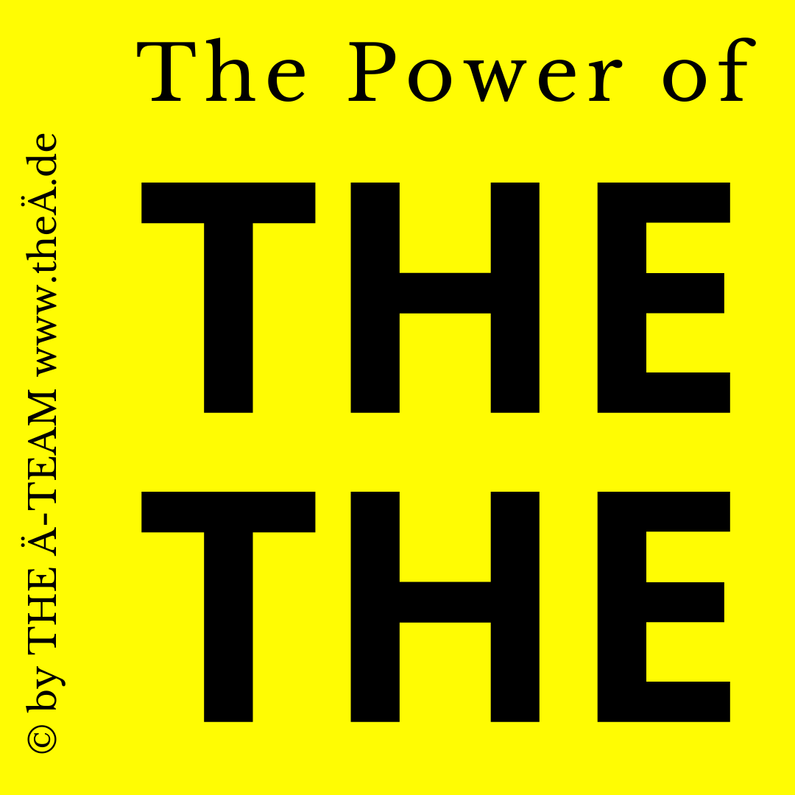

Weshalb Unternehmen den bestimmten Artikel "THE" für sich nutzen sollten.
In der Welt der Unternehmensidentität und der Musik- und Filmbranche kann die Nutzung des bestimmten englischen Artikels "THE" einen großen Unterschied machen. Er hat sich in den letzten Jahren zu einem mächtigen Werkzeug entwickelt, um Aufmerksamkeit zu erregen, Identität zu schaffen und einen bleibenden Eindruck zu hinterlassen. Ob in den Namen von Bands, Filmen, Unternehmen oder Marken, das "THE" hat sich als Geheimwaffe etabliert, um den Wert und die Strahlkraft eines Namens zu erhöhen.

THE - Der Ausdruck der Einzigartigkeit:
Denken Sie an die Ikonen der Musikgeschichte wie "The Beatles" oder "The Rolling Stones". Der bestimmte Artikel verleiht nicht nur Einzigartigkeit, sondern schafft auch eine Identität, die unverwechselbar ist. In der Geschäftswelt können Unternehmen wie "The Coca-Cola Company" oder "The Walt Disney Company" ihren Namen in einem Meer von Konkurrenten hervorstechen lassen. Seit etwa 1,5 Jahren mischt hier auch die Dachmarkenkampagne "THE LÄND" des Bundeslandes Baden-Württemberg kräftig mit.
THE - Die Magie der Memorabilität:
Ein Name, der mit "THE" beginnt, setzt sich leichter im Gedächtnis fest. Stellen Sie sich vor, wie ein Künstler oder eine Marke mit diesem einfachen Trick ihre Präsenz in den Köpfen der Menschen festigt. Dies ist der Schlüssel zur langfristigen Bindung und Kundenloyalität.
THE - Eine Aura von Bedeutung:
Wenn "THE" am Anfang steht, verleiht es dem Namen eine gewisse Bedeutung und Tiefe. Es zeigt, dass diese Band, dieses Unternehmen oder diese Marke mehr ist als nur ein gewöhnlicher Name. Es ist ein Synonym für Qualität, Innovation und Erfolg.
THE - Ein Hauch von Klasse und Stil:
In der Welt der Mode und Luxusgüter kann "the" den Namen veredeln. Unternehmen wie "The Louis Vuitton" oder "The Chanel" strahlen Eleganz und Klasse aus. Diese subtile Anpassung kann den gesamten Eindruck eines Unternehmens prägen und es auf die nächste Stufe heben.
THE - Vertrauen aufbauen mit Autorität:
Nichts symbolisiert Vertrauenswürdigkeit und Autorität mehr als ein Name mit "THE". Unternehmen wie "The Apple Inc." oder "The Microsoft Corporation" senden die Botschaft, dass sie die Spitzenreiter in ihrer Branche sind. Vertrauen wird aufgebaut, und Kunden fühlen sich beruhigt, in die Hände eines etablierten und erfolgreichen Unternehmens zu legen.
THE - Die universelle Anziehungskraft:
Der bestimmte Artikel "THE" kennt keine Sprachbarrieren. In einer globalen Wirtschaft kann er helfen, eine universelle Identität zu schaffen, die in verschiedenen Ländern und Kulturen leicht verständlich und ansprechend ist.
THE - Die Kunst des Marketings:
Die Verwendung von "THE" in einem Namen kann zu einem mächtigen Marketinginstrument werden. Ein Name, der mit "THE" beginnt, zieht automatisch die Aufmerksamkeit auf sich. Unternehmen können diese einfache Technik nutzen, um ihre Produkte, Dienstleistungen oder Inhalte herauszustellen und eine breitere Reichweite zu erzielen.
Fazit:
In der Welt der Musik, des Unternehmertums und der Markenbildung kann der bestimmte Artikel "THE" den Unterschied zwischen einem gewöhnlichen Namen und einem unvergesslichen Namen ausmachen. Von der Einzigartigkeit bis zur Vertrauenswürdigkeit hat "THE" eine beeindruckende Bandbreite von Vorteilen zu bieten. Also, warum nicht mit diesem kleinen, aber mächtigen Wort den Grundstein für eine glanzvolle Zukunft legen? Lassen Sie "THE" Ihre Geschichte erzählen und den Namen Ihres Unternehmens oder Ihrer Marke zum Leuchten bringen.
In der DOMÄN-Liste von "THE Ä-TEAM" finden Sie eine große Anzahl von Umlaut-DOMÄN-Paketen, die fast alle mit dem bestimmten Artikel "THE" beginnen.